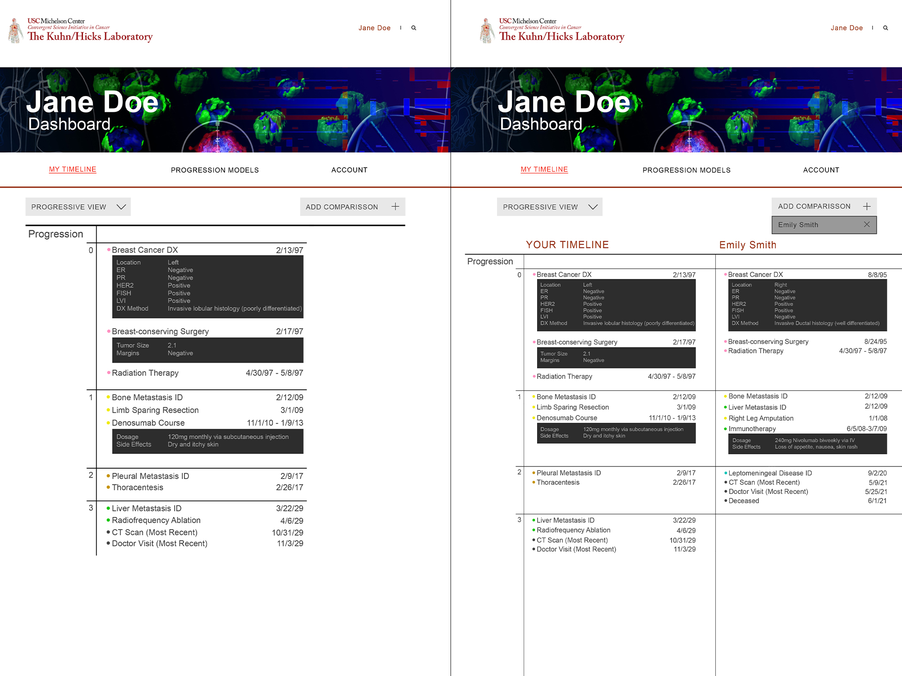
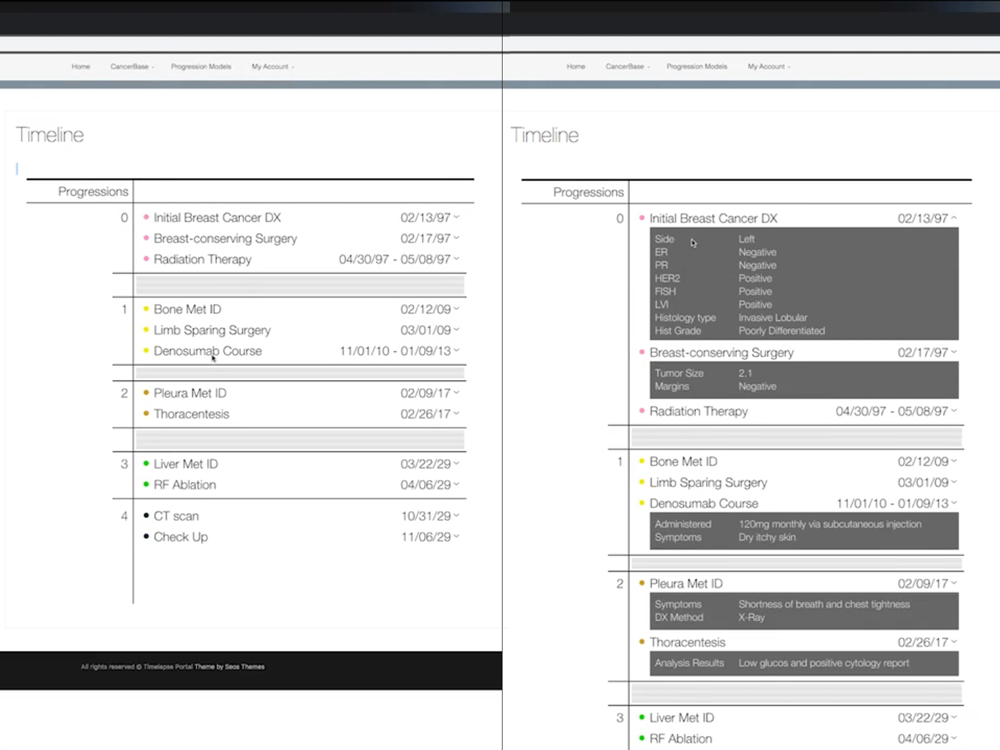

After numerous sketches and much discussion with the experts and the patients in the lab, a basic concept began to take shape. The visualization model had to strike a careful balance in which it managed to provide easy access to all the necessary information while still allowing the user to understand the patient's complete cancer journey at a glance. These were the first mock-ups created that would go on to inform functional prototypes.
Digital Product Design
Project Timelapse
In summer 2018, I worked as an intern at the USC Kuhn-Hicks Lab. I was asked to work on their data visualization models for mapping spacio-temporal cancer data. The underlying idea was that the models I would work to develop would provide valuable insight into the problem of cancer to doctors and patients alike.
The first step in this process, as with all design challenges, was clearly identifying the problem. I collaborated with my advisor to shape the problem into one that was, at its core, human-centered. Consultation with both expert oncologists and cancer patients in the lab revealed that the available information was intimidating and unapproachable, which only added to the intense emotional toll associated with cancer diagnosis and treatment. Ultimately, the project settled into the form seen here, titled "Timelapse." Timelapse is a method of data visualization that would lie at the center of a patient-facing portal. Critically, it presented a comprehensive timeline of the patient’s cancer journey and provided them access to tools to identify and connect with the journeys of similar patients in order to ease the patient’s emotional burden rather than exacerbate it.


Once the visualization model was finalized, I worked to build out a functional interactive prototype. These screen grabs show the translation of the mock-ups into a working version built with p5.js. It was fully dynamic, allowing the user to view their whole timeline at a glance with easy dropdown access to relevant details for every event.